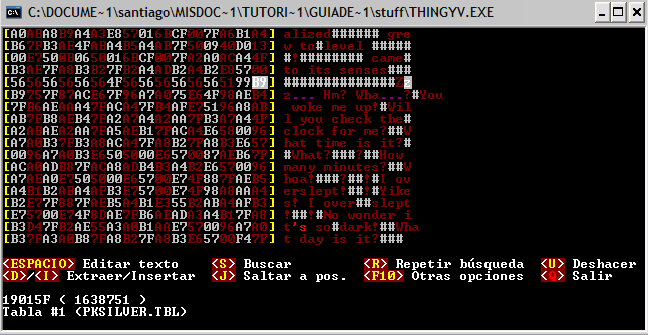
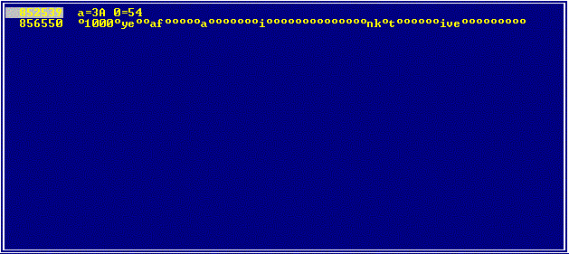

GUÍA DE TRADUCCIÓN DE ROMS
Por DaRKWiZaRDX
COMPRESIÓN DTE / MTE
Ahora daremos el primer paso en un área temida por los romhackers, la
compresión, de hecho éste tipo de compresión es muy poco temida, puede complicar
la traducción tanto como puede facilitarla, los códigos DTE / MTE (de hecho ya
los hemos visto en los ejemplos de las secciones anteriores pero no hablamos de
lo que significan) son códigos hexadecimales comunes que representan 2 (en el
caso de los DTE) o más tiles o caracteres (como los MTE), veamos de
nuevo la imagen del Pokémon silver:

Verás dos colores distintos en las letras además del
rojo oscuro y el blanco
que usa el ThingyV, tenemos un
rojo brillante en el " 's
" y un violeta
en los " ... " El " 's " es el valor hexadecimal $D4 (que lo develamos mirando
el valor hex en el editor y lo que aparecía en el juego), y los puntos
suspensivos los descubrimos de la misma forma y salieron como el valor
hexadecimal $75, entonces los agregamos a la tabla. Muchos editores muestran el
texto comprimido con DTE / MTE en distintos colores para que el traductor sepa
cuando está traduciendo texto común y cuándo un byte de texto comprimido con DTE
/ MTE.
Para UTILIZAR la compresión en la mayoría de editores simplemente ponemos el
texto traducido y será optimizado para aprovechar al máximo la compresión (si
traduces con editor hexadecimal te recomiendo el ThingyV por la velocidad con la
que optimiza la compresión DTE / MTE).
LLENANDO LA TABLA CON LOS BYTES DTE
Antes que nada, te anticipo que deberás armarte de paciencia, ya que el
completar una tabla con DTE es de lo más tedioso que verás al traducir un juego,
los mismos principios que se usan para develar la tabla DTE se usan para la MTE,
solo que tendrás que tener en cuenta que los MTE pueden ser más de un byte.
Lo que debes hacer es buscar con el buscador relativo algunas sílabas cortas,
como "st" "al" "an", y un largo etcétera, lo más probable es que encuentres las
sílabas entre lo que parece ser el texto, excepto que le faltan algunas letras y
hay unos códigos extraños, lo que puedes hacer para hacer más fácil esta tarea
es buscar texto que contenga mayúsculas y minúsculas o solo mayúsculas, ya que
como la mayor parte del script (el "guión") de un juego está en minúscula eso es
lo que se comprime para aprovechar más el espacio.
En resumen, busca sílabas cortas (si tienen mayúsculas mejor) y fíjate si lo
que encuentra junto con el resto de los códigos tiene sentido como diálogo en el
juego. Supongamos que encuentras algo así.
We<$82>av<$88>'t s<$9A>n s<$8B>ce l<$8C>t w<$9A>k.
Esta frase puede "decodificarse" si miramos en la rom y vemos algún diálogo
que se parezca en algo a esto, usando un poco la imaginación y mirando en el
juego podemos cambiarla a algo como "We haven't seen her since last week",
entonces tendremos que completar la tabla con los DTE de la siguiente forma:
82= h
88=en
8B=in
8C=as
9A=ee
Recomiendo completar la tabla en orden de caracter hex ascendente para luego
poder modificar (si debemos) caracteres con más facilidad.
Pero seguramente se entenderá mejor si probamos con un juego. ¿Qué les parece
el gran Final Fantasy III/VI de SNES? ^_^
Este juego utiliza DTE para comprimir textos. Así que haremos lo que acabo de
explicar.
Vamos a sacar los valores de la tabla común buscando palabras con Mayúsculas y
minúsculas, en este ejemplo usaremos
"1000 ye", ya que contiene números y letras y posiblemente no se repita. Veamos
lo que encuentra:

Parece que encontramos lo que buscábamos, ya que el diálogo del juego tiene
sentido comparándolo con lo que encontramos, entonces abriremos un editor hex
(en este caso el ThingyV que con los colores permite diferenciar mejor caracteres
hex) y nos situaremos en 852539 y vemos lo que nos muestra...
Entonces a partir de esto nos basaremos para encontrar los valores de DTE,
veamos como aparece en el editor hex.

Esto tiene toda la pinta de ser lo que buscamos, así que veamos los
caracteres hex que aparecen y lo que aparece en el juego y completemos la tabla.
· Después de "1000" hay un espacio antes de "ye" así que $7F es el espacio.
· Después de "ye" viene "ar" así que $A6 es "ar"
· Después de "ar" viene "s " así que $86 es "s "
Y así sucesivamente debemos ir completando la tabla, cuanto más avances más
fácil se irá haciendo ya que será mucho más fácil reconocer qué valor hex
significa X letra(s) en el juego.
Actualizamos la tabla así:
A6=ar
86=s
7F=
EL MÉTODO MÁS FÁCIL
No siempre tendremos que hacerlo con este tedioso método, pero casi siempre
deberemos empezar así, lo que podemos hacer para no tener que completar la tabla
con el método anterior es:
· Comenzar sí o sí con ese método hasta que tengamos algunos caracteres
consecutivos en la tabla (es decir, averiguar por ejemplo los valores de $8A $8B
y $8c sería bueno).
· Buscar las letras que componen los DTEs de esos valores en un buscador
relativo, las letras pueden bien estar pegadas o separadas por algún código, si
no las encontramos pegadas podemos usar el comodín (*) de la búsqueda relativa
del Translhextion.
Ahora sigamos con el ejemplo del Final Fantasy 3
Tenemos como letras en $86 "s " (eso lo sacamos ya antes) y en $87 "er" y en
$88 " a" (todos esos valores los sacamos mediante el método anterior).
Entonces ponemos en un buscador relativo (en este caso usaremos el del
Translhextion): "s er a" y veamos lo que encuentra:
Esto es lo que buscamos, cuando se encuentran muchos
valores de DTE seguidos (es decir, las letras que representan los DTE) se está
frente a lo que se denomina Tabla DTE, esto hace mucho más sencillo el completar
la tabla, ya que tan solo hay que ir tomando de a dos caracteres e ir sumando
uno al valor hex para agregarlos a la tabla, volviendo a nuestro ejemplo,
teníamos ya los valores de $86, $87 y $88, entonces tomamos las dos siguientes
letras: "re" y las agregamos a la tabla sumando uno al último valor que teníamos
($88), entonces agregamos a la tabla:
89=re
Las siguientes dos letras son "in", entonces agregamos a la tabla:
8A=in
Las siguientes dos: "ou", entonces agregamos:
8B=ou
Y así seguiremos hasta copiar toda la tabla DTE a nuestra tabla de juego,
para poder editarlo luego cómodamente con cualquier editor aprovechando la
compresión. Quizás aparezcan valores que no tenemos aún en la tabla y aparezcan
en la tabla DTE, lo más probable es que sean códigos de control (saltos de
línea, diálogo), la mejor forma de asegurarse es modificar un diálogo fácil de
localizar en el juego y luego probarlo, y ver cual es el resultado, este método
también podría usarse para completar la tabla con DTE, pero es mucho más tedioso
que los otros métodos, aunque en juegos muy difíciles de descifrar suele usarse.
APROVECHANDO EL DTE
Hay una forma de aprovechar la compresión DTE para poder hacer que nuestra
traducción ocupe menos espacio y poder traducir con mayor comodidad, es bastante
simple, pero antes hay que tomar siempre algunas precauciones (de hecho hay que
tomarlas para todo pero especialmente para esto).
HAZ COPIAS DE SEGURIDAD DE LA ROM Y
DE LA TABLA
Pongo esto porque hay que tocar algunos bytes internos de la rom que nos
pueden dejar con un texto inservible, y también deberemos modificar la tabla
para que podamos usar la compresión, aquí no mostraré ejemplos gráficos de
juegos, ya que se trata de algo muy simple, lo que se debe hacer es reemplazar
las sílabas que encontramos en la tabla DTE por unas sílabas que usemos más en
nuestra traducción, luego pasamos los cambios a UNA COPIA de la tabla (igual
siempre ten unas copias más por las dudas), por ejemplo, si modificamos "st" por
"si" buscaremos en la tabla donde aparece "st" y lo reemplazamos. Entonces
cuando abramos la rom en un editor el texto aparecerá cambiado, y si la jugamos
también lo veremos diferente. Lo que podemos hacer para editar la rom viendo el
texto original aún habiendo hecho cambios a la tabla DTE es tener dos tablas
cargadas (por eso digo que debes tener varias copias), el ThingyV y algunos
otros editores permiten cargar más de una tabla al mismo tiempo y puedes
alternar entre ellas con el Tabulador, entonces puedes ver el texto original,
pulsar el tabulador e ingresar el texto modificado ocupando seguramente menos
espacio.
Espero que haya quedado claro, la verdad el tema de modificar la tabla DTE es
bastante fácil, pero si te quedó alguna duda puedes mandarme un mail a
drkwzrdx@hotmail.com.
<< Anterior - Indice - Siguiente >>